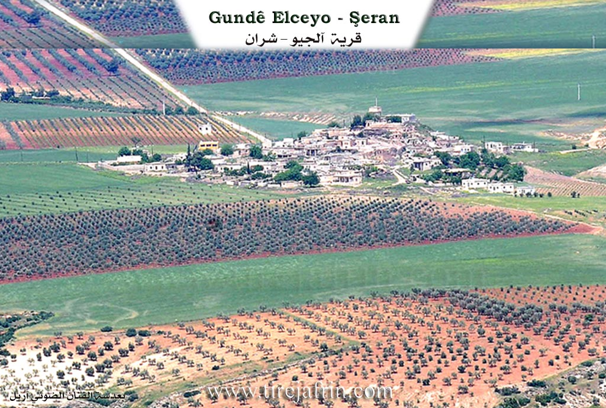
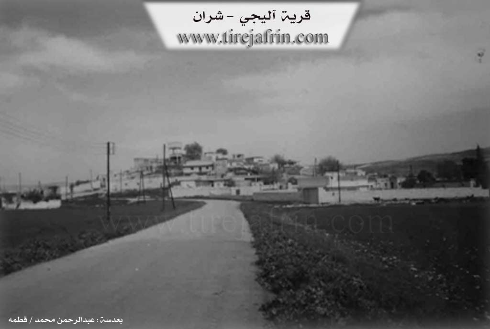

General Information
Nahiya
Şera
Also Known As
Alciya, Aliji, آلجي, ٩اولجيه

Location
Photos


Top: "Village of Alyağa - Sharan" and "www.tirejafrin.com"
Foundation & Origin
This village is one of the villages of the Sheikh Ismail Zadeh family previously. It is built on an ancient archaeological mound.
Source: TirejAfrin Site
Name Meaning
Al (آل): means flag or banner in Kurdish, Cî: a linguistic suffix meaning "owner," so the complete meaning becomes "owners of the banner."
Source: TirejAfrin Site
Summaries
I. Summary from TirejAfrin Site (English) of Alciya
According to the book "جبل الكرد" "Mountain of the Kurds (Afrin) geographical study" by Dr. Mohammed Abdo Ali:
Alciya, Aliji (آلجي) /1259n - 1015ha - 390m - 20km/:
- Al (آل): means flag or banner in Kurdish, Cî: a linguistic suffix meaning "owner," so the complete meaning becomes "owners of the banner."
- A small village located on top of a small mound. ==It is built on an ancient archaeological mound.==
According to the book Afrin... Her River and Green Hills:
Aliji (أليجي): A village in Kurdish Mountain (جبل الكرد) belonging to Sharran sub-district (ناحية شران), Afrin (منطقة عفرين), Aleppo Governorate (محافظة حلب), (1253 n).
It is a small village located in the northern part of Afrin region, on top of a small mound on the right side of a valley descending toward the southeast that feeds Afrin River (نهر عفرين). Its soil is clayey red fertile. It is 20 km north-west of Sharran (شران). It is bordered to the north by wide plain of olive trees and Duraqli village (قرية دورا قلي), to the south by slope and plain and Afrin River valley (وادي نهر عفرين) and Qarqin Large village (قرية قارقين كبير) and Ali Bazanli (علي بازانلي), to the east by valley and plain and fertile agricultural lands and Belursank village (قرية بلورسنك), and to the west by wide plain planted with olive trees and vegetables and Qarqin Small village (قرية قارقين صغير).
The number of its houses reaches ==about 50 houses== and ==the village's age is about 350 years==. This village is one of the villages of the Sheikh Ismail Zadeh family (عائلة شيخ اسماعيل زاده) previously. Its old dwellings are stone-clay with wooden roofs and the modern ones are stone made of reinforced concrete. Electricity network and state drinking water are available. It has an elementary school and a paved road passes through its center to several neighboring villages. It has a large and old olive press belonging to the Sheikh Ismail Zadeh family (عائلة شيخ اسماعيل زادة).
The village inhabitants work in grain, olive and vine cultivation on an area of 1000 hectares and in cultivating summer vegetables, apricots, pomegranates and walnuts irrigated from Afrin River (نهر عفرين) - 15 hectares due to its proximity to Afrin River course and in raising sheep. Its lands are very fertile, part of its soil is white and part is red in color.
Village Mayor: Othman Othman (عثمان عثمان)
Links & Transcripts
### V. Links
Tirejafrin:
http://www.tirejafrin.com/site/kura%20afrin%20%20sheran%20-%20alciya.htm
Local FB page:
https://www.facebook.com/gundealciya
Video:
https://www.youtube.com/watch?v=SC770_o6x5g
https://www.youtube.com/watch?v=vhfsbrEuDis